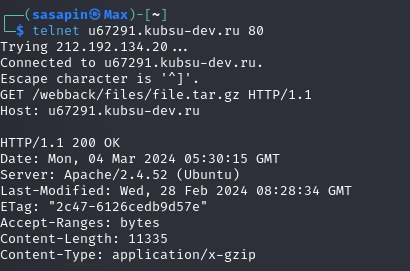

получить главную страницу методом GET в протоколе HTTP 1.0;
получить внутреннюю страницу методом GET в протоколе HTTP 1.1
определить размер файла file.tar.gz, не скачивая его

определить медиатип ресурса /image.png
отправить комментарий на сервер по адресу /index.php;
получить первые 100 байт файла /file.tar.gz
определить кодировку ресурса /index.php